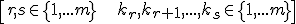
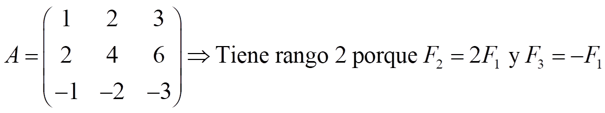
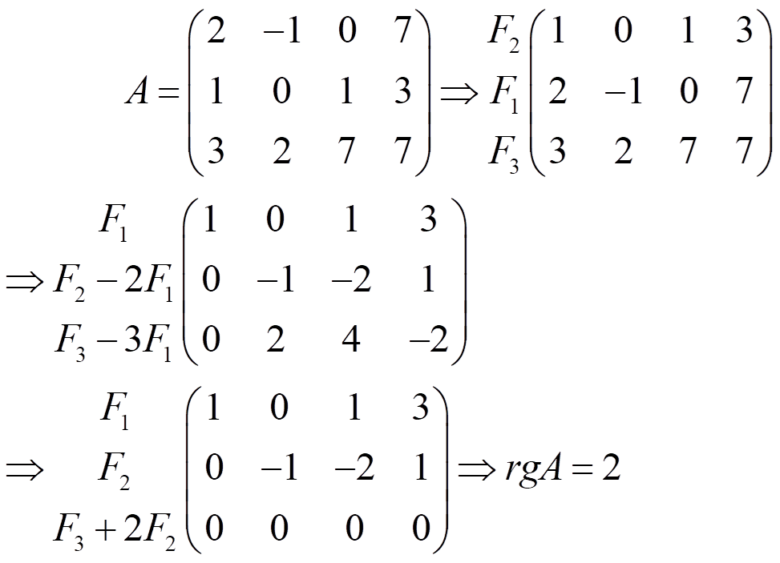
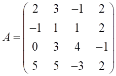

Una fila de una matriz, Ft, se dice que es linealmente dependiente si es combinación lineal de otras filas:
Ft = KrFr+ kr+1Fr+1+……+ksFs con

\[r,s\in \left\{ 1,...m \right\}\quad \quad \quad {{k}_{r}},{{k}_{r+1}},...,{{k}_{s}}\in \left\{ 1,...m \right\}\]
La definición para columnas es análoga.
El rango de una matriz es el número máximo de filas o columnas linealmente independientes que se pueden encontrar en la matriz
Ejemplo:

Cálculo del rango por el método de Gauss
Lo que hacemos es convertir la matriz en una escalonada y entonces el rango es el número de filas no nulas.
Ejemplo:

Ejercicio. Calcula el rango de esta matriz:

Solución: rgA= 3